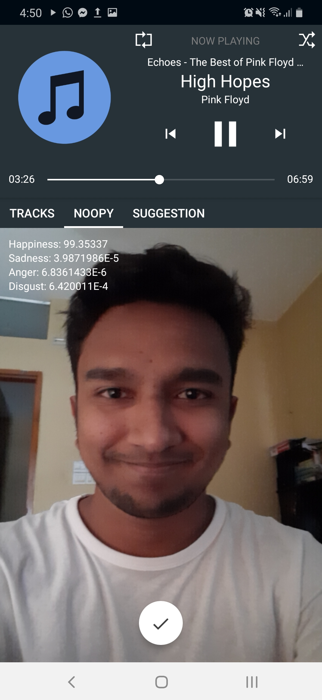
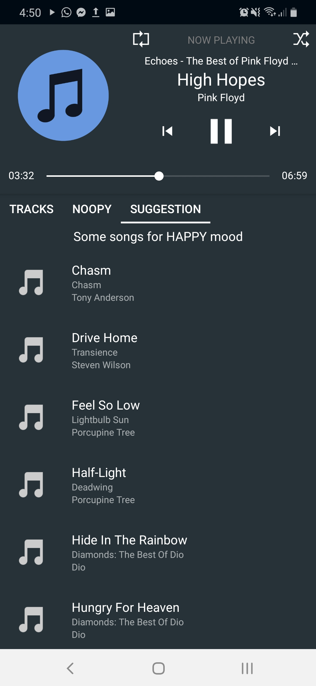

About
Nooplayer - is an intelligent Android music player which is able to recommend music from a user's playlist by analyzing user's mood by using camera. For now the player can detect 4 moods as happy, sad, angry, disgust etc. After detecting the mood of the user the player generates suggestion for the user. I used a brilliant SDK called by AffedxSDK on this project for mood detection. Completed this project on my Android course offered by university. This project is not yet completed, I mean I have several plans on this one. If I can manage time I have some other ideas to add on this project and improve the accuracy of mood detection. Therefore, I'm not releasing the source codes right now.
Development Tools
Android Studio
Project Screenshot(s)
1. Player Home

2. Mood Detection
3. Recommendation
Project Features
- Interactive Minimal UI
- Mood Detection
- Song Recommendation
- Shuffle, Repeat
- Auto File Scanning
Notes
- COPYRIGHT OF THIS PROJECT IS RESERVED & COPYING, SELLING, USING THE DESIGN IS TOTALLY PROHIBITED.
Go Back to Projects Next Project